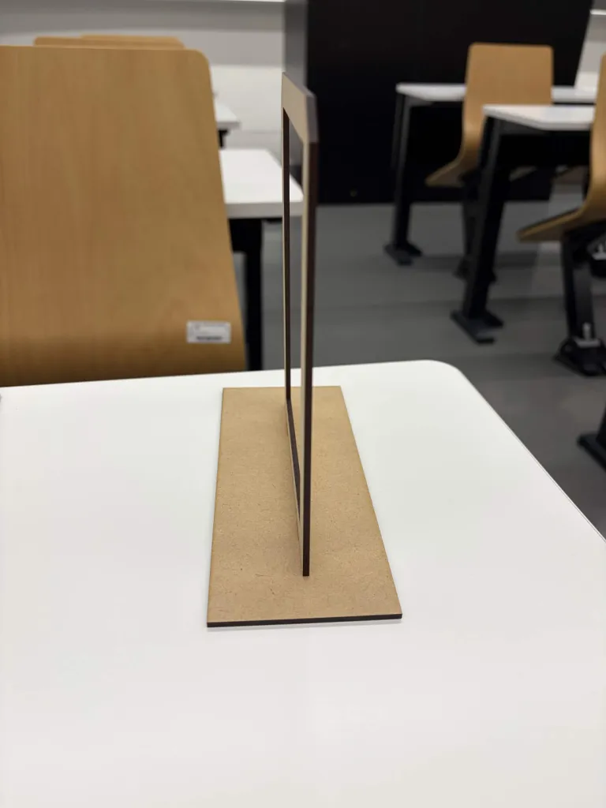
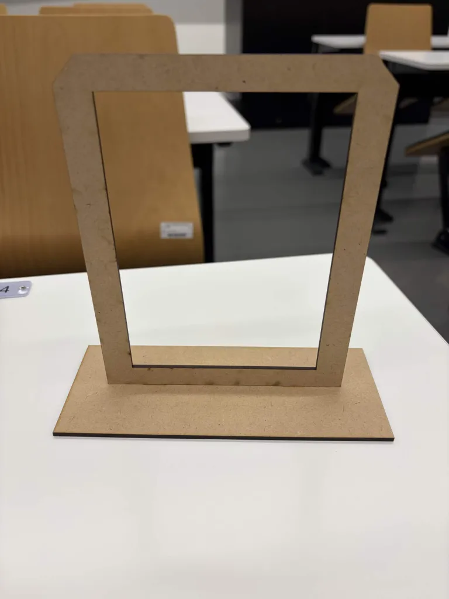
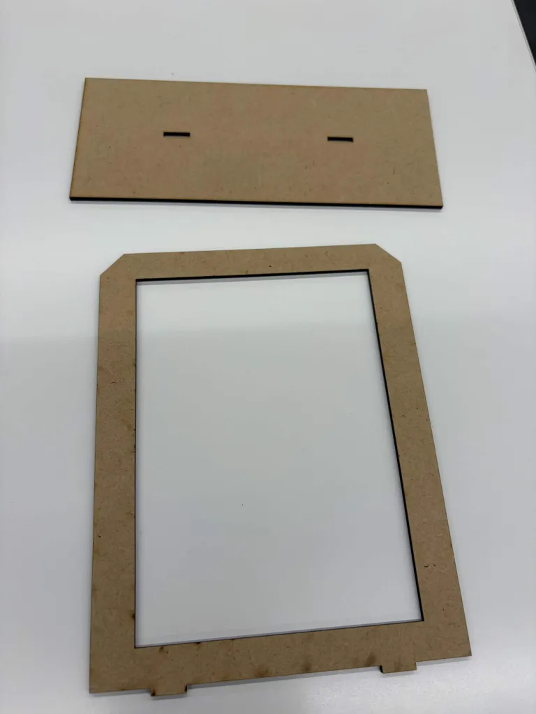
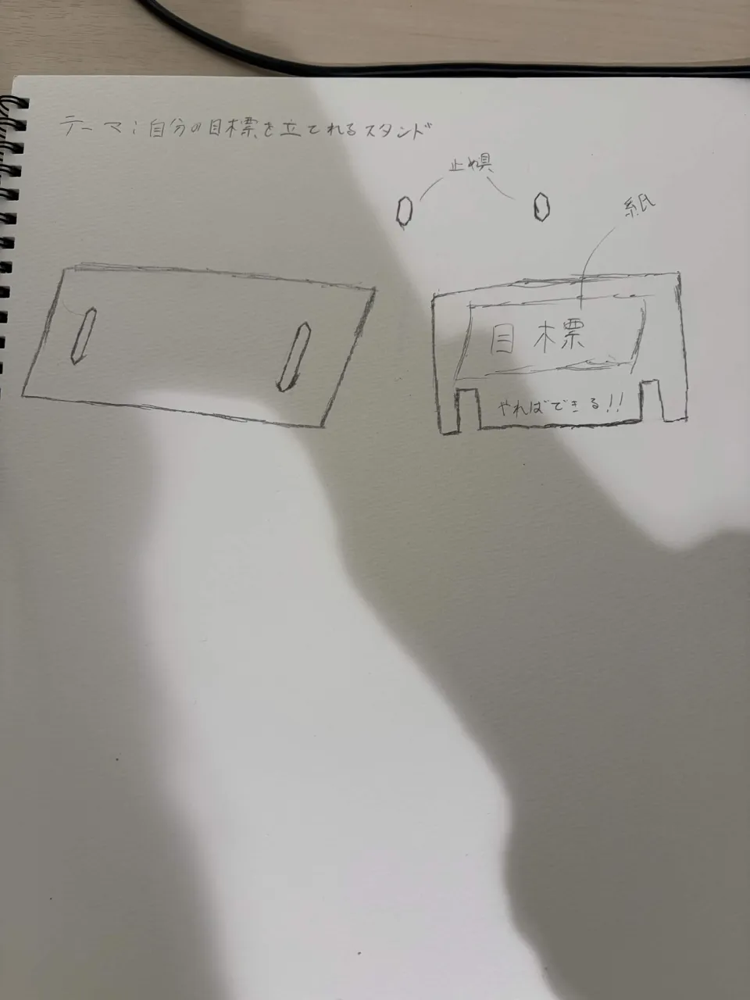
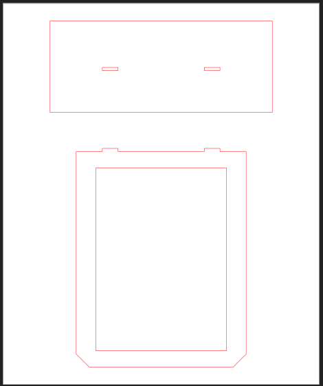

LASER CUTTING PROJECT — 02
レーザーカッターの
作品制作
目標を立てる時間を、
毎日のデスクに。

FINISHED OBJECT / 0101 WHY I MADE IT
この作品を作った理由
日頃、目標を立てる際に適当な付箋に貼ったり、変な紙切れに書いたりしていました。そんな怠惰で適当な生活をしている自分を改善するために、組み立て式で、作業や配信などをしているデスクに置ける、モチベーションにつながる目標立てを作りたいと思いました。
02 FINISHED OBJECT
完成図


03 FIRST IDEA
スケッチ
目標を書いた紙を立てて、デスクに置ける形を考えました。パーツを組み合わせて使う構造をスケッチしました。

04 DIGITAL DESIGN
Affinityを使用して作成した際の完成図
